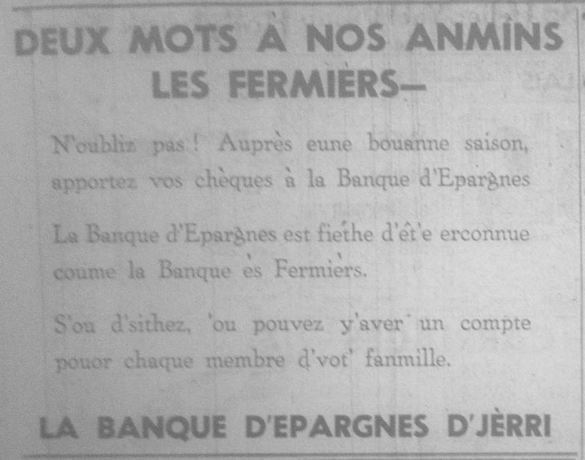

|

Deux mots à nos anmîns les fèrmièrs - N'oubliz pas! Auprès eune bouanne saison, apportez vos chèques à la Banque d'Epargnes. La Banque d'Epargnes est fiéthe d'êt'e erconnue coume la Banque ès Fermièrs. S'ou d'sithez, 'ou pouvez y'avez un compte pouor chaque membre d'vot' fanmille. La Bangue d'Epargnes d'Jèrri
|
1959
Viyiz étout: